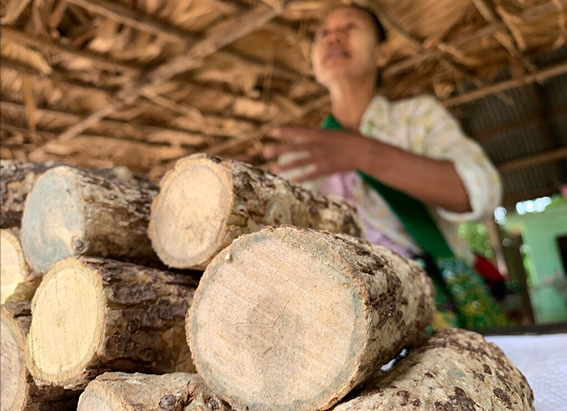

NATIONAL GEOGRAPHIC
Secrets of Harriet Tubman’s life are being revealed 100 years later
TRAVEL
We all think we know the Harriet Tubman story. The “Moses of her people,” Tubman née Araminta “Minty” Ross was born enslaved on Maryland’s Eastern Shore around 1822. From a young age her enslavers rented her out to neighbors as a domestic servant. She later escaped to Philadelphia and then returned to her birthplace at least 13 times to lead 70 of her family and friends along the Underground Railroad to freedom.
That’s usually where the story of one of America’s most inspirational heroes ends, and all I knew until I took a road trip to honor the 200th anniversary of her birth, celebrated this month. But in her nine decades (she died in 1913), Tubman did so much more.
She was the first U.S. woman to lead an armed military raid and was a spy and nurse for the Union during the U.S. Civil War. She joined Elizabeth Cady Stanton and Susan B. Anthony in their quest for women’s voting rights. She was an outdoorswoman, cared for battered women and children, raised money to build schools for newly freed people, and established the Tubman Home for Aged and Indigent Negroes, a first-of-its-kind nursing home for African Americans who had nowhere else to go.
“She doesn’t get enough credit for being a humanitarian,” says Ellen Mousin, a volunteer at the Harriet Tubman Museum and Educational Center in Cambridge, Maryland. “People, especially in the North, often don’t realize that African Americans were not usually able to go to nursing homes or healthcare facilities. She made it possible.”
More than a century after her death, historians are still unraveling the secrets of her life. This month the nation celebrates Harriet Tubman’s bicentennial and the fifth anniversary of the two national parks named after her: one in Auburn, New York, and another in Dorchester County, Maryland. Tubman is the only African American and woman to have two named national parks. From film screenings and historical lectures to art exhibits and monument installations, here’s how travelers can uncover the mystery that shrouds Tubman’s life and honor the legacy of a woman who inspired generations.
Nevertheless, she persisted
Stepping onto the vast, open fields of Dorchester County, it’s hard to imagine what gave young Tubman the courage to escapealone. It is harder to comprehend the ingenuity and resolve it took for her to achieve what others thought impossible, all the while helping heal a world that would rather have seen her broken.
In 1849, her enslaver, Edward Brodess, attempted to sell her, but there were no buyers due to a brain injury she suffered after helping an enslaved man run away. The overseer aimed a two-pound metal weight at the man in an attempt to make him return to work, but it fell short, striking Tubman, only 13 at the time. She would later endure frequent migraines, narcolepsy, and vivid dreams she would interpret as divine visions.
After her enslaver died later that year, Tubman knew her family would be separated, so she and her brothers took a leap of faith and fled. The attempt failed, but she tried again soon after, using the Underground Railroad—a network of safe houses and routes established by Black and white abolitionists that guided enslaved people in the South to freedom in the North to Philadelphia, and then later Ontario, Canada, after the Fugitive Slave Act became U.S. law in 1850. The act threatened imprisonment for anyone caught assisting a fugitive and allowed headhunters to drag escaped slaves back into bondage. Her husband John Tubman, a free Black man, refused to flee with her and remarried the following year.
“There’s just so much we don’t know about Tubman’s life. In a way she became an American folk hero,” says Meghan Martinez, a professor of history at Florida State University. She believes Tubman’s legendary status may be one of the reasons why we don’t know more about her. “Americans don’t like when a story doesn’t have a happy ending. It’s easier to end her story at the Underground Railroad because it ruins our image of her being the hero when we find out she died sick and nearly destitute,” she says.
Marisa J. Fuentes, a professor of African American history at Rutgers University, adds that until almost two decades ago, there wasn’t much scholarly work on Harriet Tubman. “Much of what was written about Harriet until about early 2000s was for school children, leaning more into her extraordinary feats as conductor and less on the accuracy of her history,” she says. “It wasn’t until Black women opened the field of Black women’s history in the 1980s, that historians started asking the right questions.”
Comments :
- john Very good
- john Very good
Leave a Reply
Your email address will not be published. Required fields are marked*
Related posts:
-
 The unexpected twists on a writer's 24,000 mile walk across the world
The unexpected twists on a writer's 24,000 mile walk across the worldThe daily GPS tracks logged by the Out of Eden Walk, a 24,000-mile foot journey across the world along the pathways of our Stone Age ancestors, contain hidden stories in map form.
View article -
In Myanmar, everyone swears by this natural skin cosmetic
It is impossible to say. The primordial evidence the hides of Stone Age peoples has long since turned to dust. Yet clues remain. A rouge-colored mineral called ocher has been discovered, finely ground and ready for application
View article -
 The holidays can take a toll on your gut health. Here’s how to deal.
The holidays can take a toll on your gut health. Here’s how to deal.What you consume affects your gut microbiome, a community of microscopic organisms including bacteria, viruses, fungi, and parasites. And its importance can’t be overstated. This tiny world helps protect the body against
View article